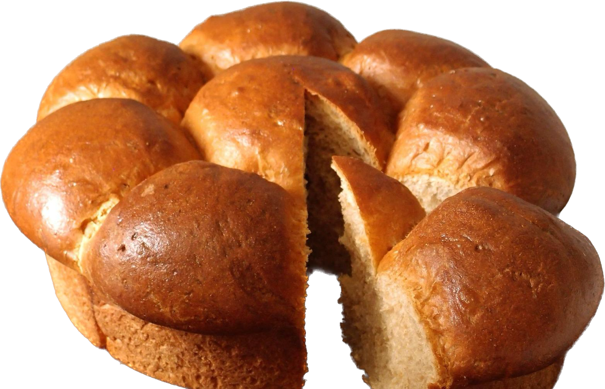
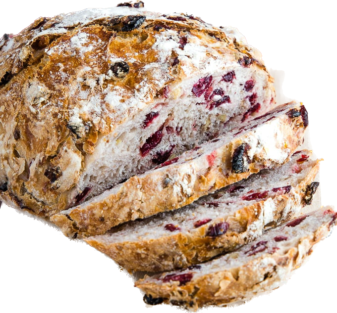
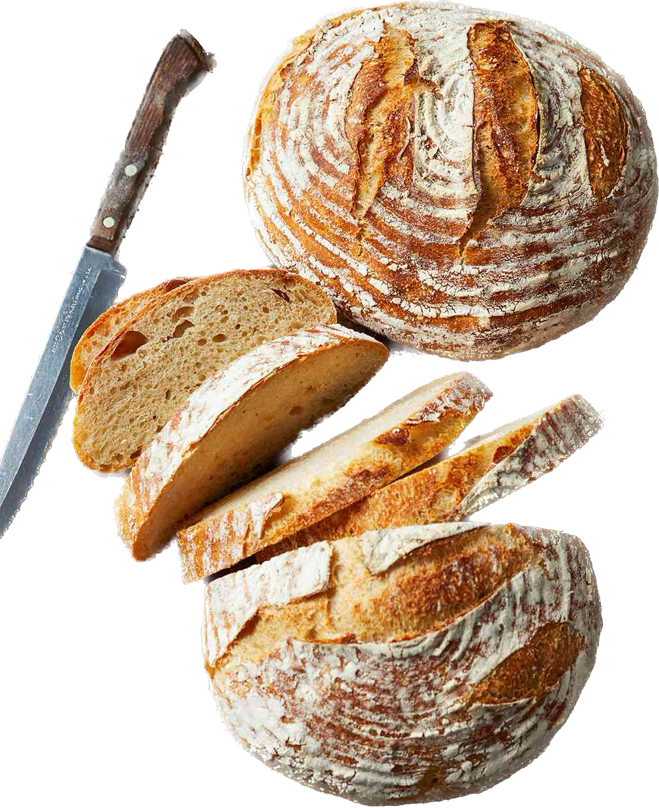

Welcome to Parc Bakery!
From our home made bakery we have some incredible breades thst goes with multiple dishes.
Brioche
Our Brioche is different from most breads because it's made with an enriched dough and tastes a little sweeter. our breads are made from the best quality of flour, eggs, butter, liquid milk, water, cream, and brandy, leavening yeast, salt, and sugar. And we use this bread with the our Wild Mushrooms and Carpaccio.
cranbarry walnut
Our cranbarry walnut bread is different to most breads because it's made with an enriched dough and tastes a little sweeter. our breads are made from the best quality of flour, eggs, butter, liquid milk, water, cream, and brandy, leavening yeast, salt, and sugar. And we use this bread with our Charcuterie.
sourdough
Our Sourdough bread is made with an enriched dough, and are made from the best quality of flour, eggs, butter, liquid milk, water, cream, and brandy, leavening yeast, salt, and sugar. And we use this bread with the our charred Burratta.
Bagutte
 Our Bagutte is different to most breads because
its takes almost 10 to 12 hours to make it's made
with an
enriched dough, our breads are made from the best quality of flour, eggs,
butter, liquid
milk, water, cream, and brandy, leavening yeast, salt, and sugar. And we present this bread with butter
and also we use this bread with our Appatizer
Mussels.
Our Bagutte is different to most breads because
its takes almost 10 to 12 hours to make it's made
with an
enriched dough, our breads are made from the best quality of flour, eggs,
butter, liquid
milk, water, cream, and brandy, leavening yeast, salt, and sugar. And we present this bread with butter
and also we use this bread with our Appatizer
Mussels.